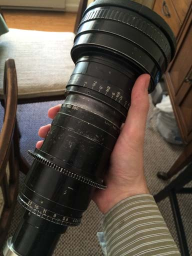

A Guide to the Inner Mysteries of the Angenieux 10x25 T3.9
So, you've found yourself an Angenieux 10x25 T3.9: a classic, to be sure, and perhaps the definitive cinema zoom; favored tool of many a legendary filmmaker (see Akira Kurosawa pictured with one to the left). Perhaps it isn't as sharp as modern alternatives, or as fast, but it's light and robust, and few lenses can be said to have quite as much charisma as fifties and sixties era Angenieuxs. Their color rendition is unmatched, and they spread the light around the frame in a warm and friendly way.
The only trouble is that the particular specimen you've got is dirty inside, or perhaps miscalibrated, mechanically frozen, or even damaged (a result of the many bumps and drops it has no doubt sustained in its fifty years of loyal service). You'd like to have it repaired or improved and made to fit a modern camera, but you're working on a student's budget, and can't afford to send it to a place like Duclos Lenses for service (though they do excellent work, and their prices are not unreasonable). You have thus resolved to do the job yourself, but to your immense consternation, you have not been able to find any schematics, repair guides, or dissections of the 10x25 anywhere on the internet.
I was once in a situation like yours, with an elderly and mechanically damaged but exceptionally cheap 10x25. I managed to muddle through on my own and now, having braved the great hic sunt leones of early French cinezoom design, I present this as documentation of the process, in hope that it may serve as a guide (or warning) to others who may attempt the same.
Table of Contents
1. Vivisection

Although my lens is the original 10x25B T3.9 version, this guide should also apply to the later 10x25 T2 (T2 being the model designation; confusingly, the 10x25 T2 is also T3.9). The more modern 10x25 HP and HR lenses are allegedly derived from the same optical design; nonetheless, I doubt that they are mechanically similar. The current Angenieux Optimo Style 25-250 is a new design, not derived from the original. You're likely to be better off sending any modern Angenieux lens to a professional.
To be clear, this document constitutes a log of my own disassembly of the 10x25. I am not a professional, nor do I have any prior training or experience. I provide this for the benefit for others who wish to service their own lenses, but I assume no responsibility for any damage that may occur as a result.
Before you begin, you should make sure you have all the tools and resources you will eventually need to complete the job. Many of the screws and parts inside the lens are delicate, and they do not respond well to being driven with the wrong screwdrivers. Additionally, you will likely have to relubricate various parts of your lens, even if you do not specifically intend to remove the existing lubrication. The choice of lubricants is contentious; the most critical factors are that the lubricant does not run onto the lens elements and that it does not outgas (which eventually causes the lens to develop internal haze). I used SuperLube synthetic multipurpose grease, and the results were excellent. For cleaning the glass elements of the lens (which will likely acquire a few fingerprints, hairs, or flecks of dust, in spite of your best efforts), I suggest a lens pen, which is exceptionally gentle and leaves no residue. For cleaning small mechanical parts, it's best to use an ultrasonic bath. Larger parts can be cleaned with paper towels and a mild solvent such as acetone.
Checklist
- Set of small, strong, flat-blade screwdrivers.
- Set of small, strong hex keys for removing any gears that may be installed.
- Storage system with many compartments for the multitude of small screws you will be removing. Be sure to label the screws as they are removed.
- Spanner wrench with pointed tips. 80mm width should be enough, unless you want to remove the front optical block from its housing.
- Length of thin, stiff wire.
- Grease to apply during reassembly.
- Small disposeable paintbrush with which to apply grease.
- Solvent and towels for removing old grease.
- Ultrasonic cleaner (optional, but recommended).
- Good light source and work surface.
Overview
I begin with the accessory parts already removed from the lens. Notice the absence of the lens mount at the tail end, the zoom gear, and the focus scale. These are meant to be changed in the field, and are therefore easy to remove. The focus scale is attached with three set screws, and the lens gear with four (matching four holes at the center of the zoom ring). The lens mount is held in place with a retainer ring, which is prevented from backing out via three set screws. Beneath the lens mount may be one or more shims, which are used to adjust the distance between the lens and the film plane.
The lens is divided roughly into three sections. Beneath the lens mount at the tail end is the rear group, which is the only component of the lens with adjustable centering screws. Between the rear group and the next group is the aperture. Inside the body of the lens is the zoom group, comprising two subgroups which move together or apart when the zoom ring is rotated (these subgroups do not rotate within the barrel, however). Finally, at the front of the lens is the focusing group.
We will begin by separating the front group from the zoom group.
Exposing the Helicoid and Separating the Front Block
The helicoid cover is attached to the lens by three set screws toward the tail end. Removing the screws allows the cover to slide toward the front of the lens, but does not allow it to be removed. For this reason, I recommend leaving the cover attached until you have separated the helicoid, if you intend to disassemble the lens. However, if you wish to relubricate the helicoid without disassembling the lens, you can exposing the majority of it by sliding the helicoid cover forward and focusing the lens to its closest position.
With the lens focused to its closest position, a brass screw should appear just below the helicoid cover (the lens is shown here with the cover removed). This screw holds the helicoid stop in place and prevents the front block of the lens from extending too far forward or retracting too far back. There should be sufficient clearance to remove the screw.
With the helicoid stop screw removed, rotating the focus slightly further should bring the (now free) helicoid stop into alignment with a nearby window in the front block of the lens. When reassembling the lens, you will need to insert the stop through this window. You will also need to ensure that the hole for the helicoid stop screw aligns perfectly with the center of the channel in which the helicoid stop rests (this may require several attempts).
With the helicoid screw and stop removed, the helicoid should twist free, separating the front block of the lens from the zoom block and rear block.
Three set screws toward the rear of the front block will allow the front lens group the be rotated relative to the helicoid. Rotating this joint with the lens assembled will adjust the position of the infinity stop (the procedure is covered in the Calibration section). If you unscrew the joint entirely, the front group will separate from the helicoid. Be careful - the rear lens surface will be exposed.
The three elements of the front group are fixed into their housing via a spanner ring on the front and a number of set screws around the diameter. Removing these will allow you to access the elements individually. Be careful, however: the spanner ring is very large, and will be difficult to remove without risking damage to the front element.
Removing the Rear Block
Now the front of the zoom block will be exposed. The first element protrudes slightly from the barrel when the zoom ring is in the wide position. For the remainder of the guide, be sure the zoom ring is set to the long position whenever you set the lens on its end.
The rear block rests within the sub-mount at the tail end of the lens. It's a single sealed unit, calibrated at the factory. In the narrow gap between the sub-mount and the rear lens group is a retainer ring, which holds the group in place. Unfortunately, very few spanner wrenches will fit into the gap. If yours does, removing the ring will be easy. If not, you may need to make some other tools do the job instead.
With a little bit of fiddling, a screw driver (or better yet, a pair of screw drivers) can stand in for a spanner wrench. When reassembling the lens, you must be sure to reinstall this ring after inserting the adjustment screws, which we will remove next. Be careful not to crossthread it, or to tighten it too much, lest you be unable to remove it again. If you do not intend to clean or lubricate the aperture mechanism, you can leave the retainer ring in place and remove the rear block along with the aperture. To adjust the centering of the rear group, it is only necessary to loosen this ring slightly.
Between the two sets of threads in the sub-mount are four set screws, which hold the rear block in place. The rear block is slightly smaller than the cavity in which it rests, and these four screws determine its position relative to the other elements in the lens. Correct centering of the rear block is important for good performance across the frame. Loosening all four screws slightly will allow the rear lens group to be removed.

Removing the Aperture Unit
Looking down into the rear end of the barrel, you should now see the aperture exposed. Just inside the aperture ring, around the outside of the larger sub-mount threads, is another retaining ring. This one is unusual (and unique among those on my lens) in that it has no slots for a spanner wrench. Loosen the three set screws around the outside. It may be possible to use a hook spanner with the screw holes, but I wouldn't recommend it, as you risk damaging them. Note that when you remove this ring, there may be some lubricant on the underside.
With the retaining ring removed, the aperture ring lifts off easily. The inside of the ring should be coated with grease, as should be the matching surface on the aperture unit. Note that there is a slot in the aperture ring which matches a pin on the aperture unit; this pin transmits rotation from the ring to the internals of the aperture mechanism, and the two must align when the lens is reassembled. On the underside of the aperture ring are the hard stops.
On my lens, it is possible to close the aperture at least one stop past the officially marked endpoint once the aperture ring is removed; indeed it appears that one of the hard stops on the ring can be relocated in order to permit this with the lens assembled. Although I have no firm evidence, I suspect that the 10x25 shares parts with the significantly more rare Angeniux 10x15 f/1.9 for Super16, and that the latter lens must be able to close its aperture at least 1.5 stops further in order to reach f/22. By using configurable hard stops, Angenieux was able to manufacture a single aperture mechanism (and a single aperture ring with two different sets of engravings) that is suitable for both lenses.
Next is the retainer for the aperture mechanism itself. It is locked in place by three set screws around the outside, which you must now loosen. It can likely be removed by twisting it with your fingers, but if not, it also has dimples for a spanner wrench. Notice that the aperture indices are engraved directly into this part. On my lens, they line up perfectly when the ring is tight.
Finally, the aperture mechanism can be removed. Notice that there is a tab projecting downward into a matching slot in the lens. This tab must be inserted into the same slot when the lens is reassembled, but there are several others, so you may want to make a note of which is correct. Underneath the flange of the aperture mechanism there may be a thin metal shim separating it from the main body of the lens. This is important to ensure the lens is calibrated correctly. To clean the aperture mechanism, it need not be disassembled. Simply placing it blades-down in an ultrasonic bath should remove any dirt or oil that may have accumulated.
The aperture mechanism did not come frome the factory with any lubrication, so far as I can determine. To ensure it lasts as long as possible, you may want to lubricate it yourself before reassembly. Do not use grease, oil, or other liquid lubricants. A very small amount of fine powdered graphite (such as is used in locks) will work perfectly. I applied a tiny portion directly to the aperture blades, then spent about ten minutes actuating the aperture from end to end while using a Q-tip to remove as much graphite as possible. There should not be any visible graphite dust on the blades when you reassemble the lens. When removing stray graphite, always brush in the same direction as the aperture blades to avoid damaging them.
Disassembling the Zoom Block
Now we have reached the most complex portion of the lens: the main body and zoom mechanism. The two zoom groups each move within the barrel on two lubricated slides and one pin that travel in linear tracks along the outside wall (these tracks are visible through the front element when the lens is assembled). In addition, each group carries a longer pin that projects through a slot in the wall and into a helical brass track in the rotating zoom sleeve. Thus, when the sleeve rotates, it draws the two zoom groups foreward and backward.
Begin disassembly of this segment by removing the cover on the rear part of the zoom sleeve. There are no set screws, but the cover is exceptionally thin, so be careful not to damage it. On my lens, the joint between this cover and the rest of the zoom sleeve was covered by paint, and it could not be seen or felt. I was fortunate to discover the removeable cover by accident. With the cover removed, you have access to the set screws which fix the zoom sleeve retainer in place. Remove these.
Now you will need to make use of your spanner wrench. Place the pins into the two dimples on the zoom sleeve retainer, and remove it. There may be some grease underneath. Even with this retainer removed, the zoom sleeve will remain fixed to the lens by the pins which ride in its interior tracks.
Just behind the zoom scale, there should be three tiny set screws. Remove these. It is now possible to rotate the zoom scale relative to the rest of the zoom sleeve. By rotating and reinstalling the set screws, the scale can be recalibrated. To disassemble the lens, you must continue to rotate it until it slides foward. Note that it will be trapped by the helicoid and cannot be removed this way, but we must access two screws that are hidden beneath it.
Two screws should now be visible through a port under the zoom scale (if not, rotate the zoom sleeve until they become visible). In addition, there should be an elderly rubber stop. Remove the screws, but leave the stop in place.
With the previous two screws removed, it should be possible to rotate the sleeve far enough that the pin controlling the rear optical group becomes visible in a port at the tail end. Do not remove this pin yet. The optical block to which it is connected is spring loaded, and removing this pin without first capturing the block would allow it to snap violently forward, potentially damaging it.
For the next trick, you will need a length of stiff wire, bent into a hook shape. The hook should be about the size of an ordinary paperclip, but I do not recommend using an actual paperclip, as it is unlikely to be strong enough.
Looking down the tail end of the lens, you should see that the rear group is connected to two slides and one pin that ride in channels cut in the inner wall. The pin is at the right side of the image on the left; it is not the same as the pin visible through the port in the zoom sleeve. You want to hook the wire around this pin (being very careful not to poke the lens element on the opposite side), then bend the wire over the end of the lens body to hold the rear group in place, as seen in the next photo.
With the rear group held in place, you can now safely remove the pin through the port in the rear of the zoom sleeve. When reinstalling this pin, you may want to use threadlocker to prevent it from twisting as it runs along the groove. Once the pin is removed, you can grasp the wire and gently lower the rear group into the body of the lens, until it comes to a rest on the contracted springs. Unhook the wire and remove it.
Finally, you can twist the zoom sleeve clockwise to raise it up over the pin connected to the front optical group. This pin should exit the groove at the front end of the sleeve. Remove the sleeve from the tail end of the lens, but be careful not to pull at an angle, lest it become stuck. I found that twisting it as I removed it helped significantly in this regard.
The sleeve twists on two rings, one at each end of the sleeve and matching surfaces on the body. These should be coated with grease, as should be the grooves inside the sleeves in which the pins travel, and the tracks in the main body in which the slides travel. Be careful not to overgrease, however, as the movement of the various parts tends to cause excess grease to collect.
If you wish to remove the front optical group, simply unscrew the pin which protrudes through the slot in the lens body, and slide the group out the front end of the lens. When reinserting the pin, you may want to use threadlocker to prevent it from backing out as it travels within its matching groove. It's best to leave the rear optical block in place, if possible, as it's attached to the body by two springs which are, in the case of my lens, riveted directly to the barrel. It should be possible to perform any further cleaning or lubrication without removing the rear group.
Congratulations! You have fully disassembled your lens. Follow these steps in reverse to reassemble it. Hopefully you have been carefully tracking and labeling your screws.
2. Modernization
PL Mount
To my knowledge, the Angenieux 10x25 T3.9 was never sold with a modern mount. The Arri Standard and Bayonette mounts can be adapted to PL quite cheaply, but the original mounts will interfere with many cameras (in particular, many cameras with Canon EF mount are affected). Thus, to use this lens on many modern (non-PL cameras), the original mount will actually have to be removed. Aftermarket lens mounts are available from Visual Products and Duclos, and there are a number of optical shops capable of doing the adaptation, but as always, they tend to be very expensive.
If you have access to a brazing torch, the best method may be to braze a PL adapter directly onto the original mount, then use a lathe to cut off the part of the original mount tube that projects past the new PL mount. I did not have a brazing torch when I began this project, and so I used chose a different method that requires only a lathe. The unfortunate tradeoff is that my mount design will be significantly less strong (and possibly less precise); however, so long as the lens is supported, this should not be an issue in practice.
To create the mount, I will be using two donor parts, shown at left. I will be building a PL mount for the lens, but I intend to use the lens with an EF mount camera, so I will be using a PL to EF adapter made by Ciecio7.
Checklist
- RAFCamera 44mm barrel to M52x1 adapter
- RAFCamera M52x1 to PL adapter
- Benchtop lathe (mine came from Harbor Freight)
- Small, circular file
- Vise
- 3M foil tape
First, we must fix the fact that the RAFCamera PL mount is slightly out of spec. The notches in the flange of the one I received are too shallow, and need to be filed slightly.
Next we need to trim the RAFCamera PL adapter slightly, since the tail end is too long to allow it to fit in the C7 PL-EF adapter. The angled, camera-facing end must be reduced by a few millimeters, such that there is roughly the same amount of material on each side of the flange.
Now we will cut the lens mount to fit within the 44mm barrel adapter. Beware - we will be making irreversible changes. Past this point, there's no going back. If you make a mistake, you can still use an aftermarket lens mount, but the original mount will be ruined.
The goal is to cut the stainless steel (or in the case of Standard mount, aluminum) of the original mount to be identical in diameter to the black painted barrel. This barrel is 44mm, the same as the inner diameter of the RAFCamera adapter. We will also need to remove the part of the original mount that projects past the PL flange. Since the retainer ring cannot be removed until after the cut, it will need to be taped down. Cut carefully; there is no going back.

With the original lens mount cut down, the 44mm barrel adapter should now fit over it. There may be some wiggle room due to imprecise cutting (or the fact that the barrel adapter itself is slightly greater than 44mm in diameter). If so, some foil tape (or carefully inserted ordinary foil) can be used as a shim. I found that on my lens, the barrel adapter had to be positioned 14.4mm from the retaining ring, though there is likely to be some variation. Inaccuracy in this measurement can be compensated for by shimming during calibration, so long as it is within 1mm or so of the correct value. It may make sense to cut a spacer ring to ensure barrel adapter is positioned evenly.
Finally, screw the M52x1 to PL adapter onto the end of the lens. The mount is complete, but it will not be strong enough to support the weight of the lens, so we must also construct a lens support bracket.Lens Support
I used a 1/2 inch thick plastic sheet to fabricate a support for the lens. The lens is dimentioned in metric units, but I found that a 2 11/16 inch hole saw produced a perfect result. The material was designed to be a replacement for wood, but it had a tendency to melt when cut with a hole saw. You may need to touch up the inner surface afterward. I positioned the hole such that its center is 5cm from each edge (i.e. it is centered within a 10cm square); this dimention was chosen to match the length of the foot on my PL-EF adapter.
Checklist
- 1/2 inch thick source material (wood or plastic)
- 2 11/16 inch hole saw
- 1/4"-20 thread insert
- 2× 9cm long, 4mm diameter screws, with locknuts
- Drill press
- Miter saw
- Router with 45° angle bit
- Counterbore large enough to accommodate screw heads
- Long drill bit large enough to accommodate 4mm screw
This is a good point to drill all the necessary holes. We will need one screw on each side of the lens to clamp the lens support together. You will need a drill press. Do not attempt to drill through four inches of plastic with a hand drill. Even with a drill press, the bit will tend to deflect when passing through such a great thickness of material. Go slowly and be careful. After the holes are drilled, counterbore a short distance into each end. An additonal hole will be needed at the center of one of the edges (parallel to the two long holes for the clamping screw). This is where the thread insert will be installed; do not drill all the way through. I found that the easiest way to install the thread insert was to file notches into a second insert and use it as a makeshift tap, cutting threads into the plastice before I inserted the real part. Depending on the material, you may need to glue it in place, but I did not.
Now we cut the support in half, exactly across the diameter of the hole from the first step.
Finally, we chamfer the interior edges with a router. The plastic is slightly thicker than the gap on the lens in which it must fit; this cut prevents it from interfering with the zoom ring.
Install the lens support just in front of the zoom ring. It may be useful to place a few washers between the two halves, to make it easier to tighten the two sides equally. Support the entire assembly using 15mm rails and rail blocks (I use parts made by Hondo Garage). With the lens and its support finally ready, it is now time for calibration.